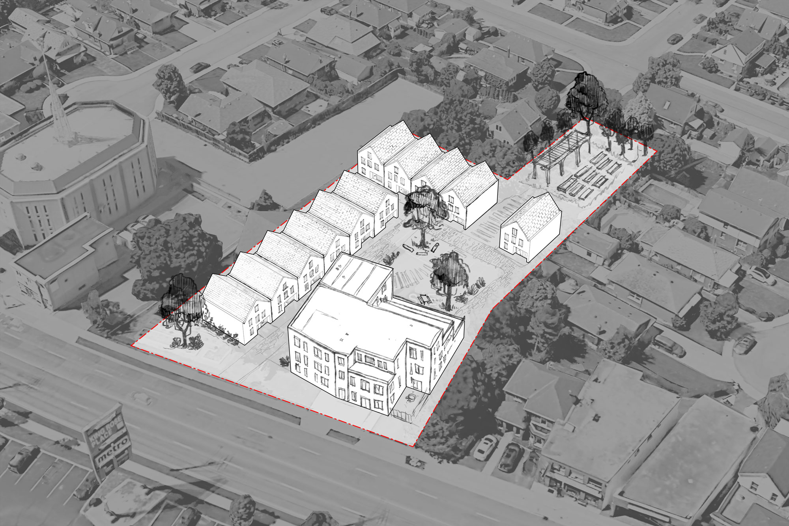
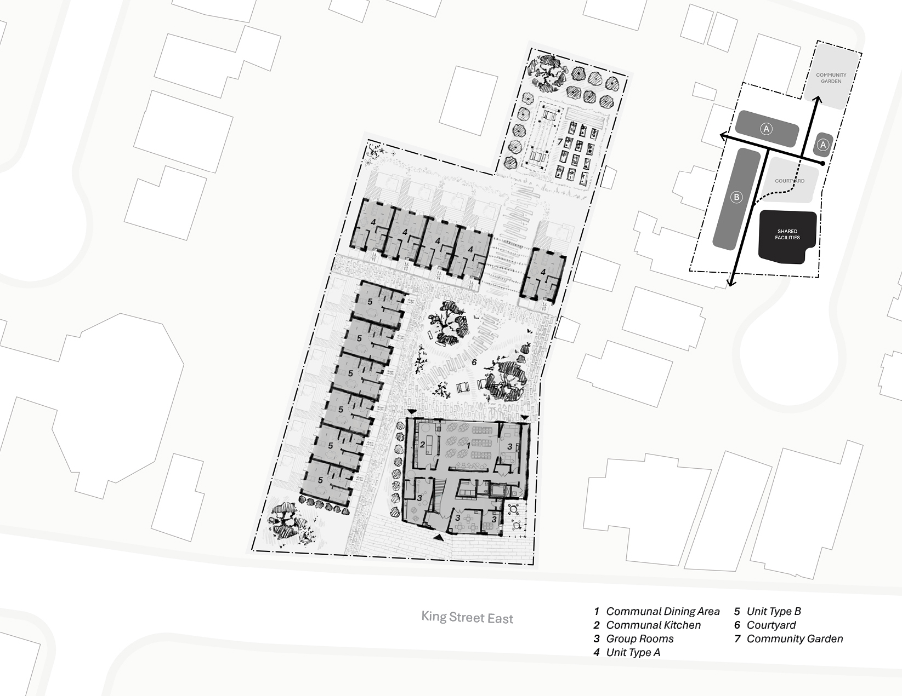
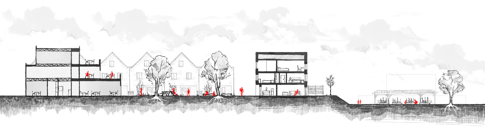
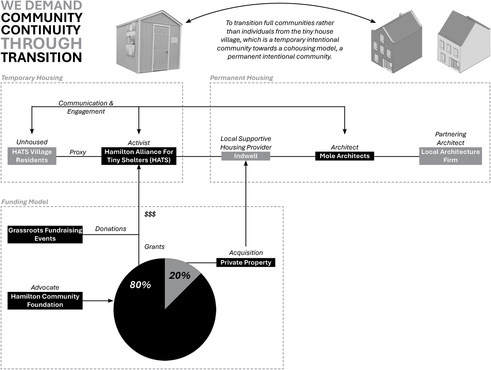
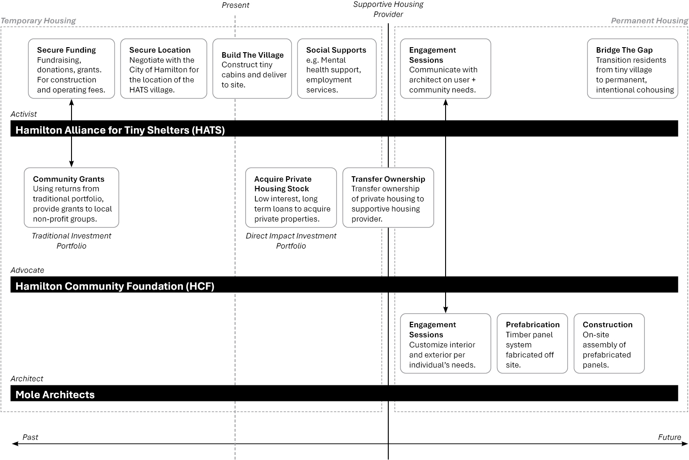

| 2502 | We Demand Community Continuity Through Transition | Research |
We demand Community Continuity Through Transition. This means to transition full communities rather than individuals from the tiny house village, which is a temporary intentional community towards a cohousing model, a permanent intentional community.
Using Mole Architect’s Marmalade Lane as a precedent case study, the plan for this proposal consists of a series of prefabricated, customizable homes as well as a shared communal facility arranged around an open courtyard. Between the homes at the north end of the property is a pathway that leads down in elevation towards a community garden. The project features multiple dwelling types, all sharing the same front-to-back dimensions. Individual units are personalized to residents' preferences—allowing them to select their exterior shell, interior layout, and fixtures.
Hamilton’s local tiny shelter community, HATS proposes a similar layout for their tiny house village—homes arranged around a circular plaza with a shared communal facility and community garden. This familiar arrangement provides both physical and social continuity for residents transitioning between communities.
Course: Ending Housing Alienation in c\a\n\a\d\a
Course Instructor: Adrian Blackwell, University of Waterloo
Below is an excerpt from the course outline for the course: “Ending Housing Alienation in c\a\n\a\d\a“ taken in the W2025 term at the University of Waterloo.
“The course augments and participates in Architects Against Housing Alienation (AAHA)’s ongoing campaign to find solutions to housing alienation in c\a\n\a\d\a. It will start from AAHA’s ten demands and work to find and examine existing organizations that are working to end housing alienation. So, within this course, we will look at three different case studies: housing activists, housing advocates, and housing architects.”

Aerial collage/sketch of the transitional shelter proposal on the site of the former Faith Lutheran Church on 1907 King Street East, Hamilton ON recently acquired by the Hamilton Community Foundation.

Site Plan Collage/Sketch

Site Section Collage/Sketch

Interactive Framework: People // Activist // Advocate // Architect

Timeline: People // Activist // Advocate // Architect